腾讯云代码助手支持配置 SSO（单点登录）飞书认证源，以实现使用飞书账号进行统一身份认证。通过本文档，您将了解到配置飞书认证源的具体步骤，包括在飞书和腾讯云代码助手平台上所需进行的配置。
操作步骤
步骤一：创建企业自建应用
配置飞书认证源需要在 飞书开放平台 上通过自建应用来完成，您可以按下图指引操作，或参见 飞书-企业自建应用开发流程。
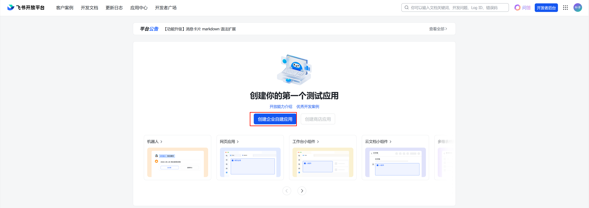
填写表单并完成应用创建。
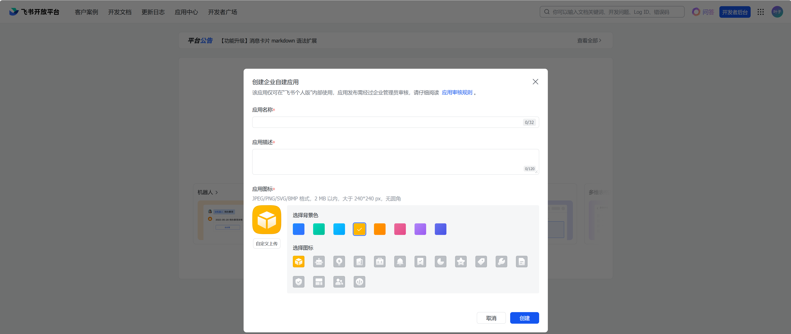
步骤二：配置自建应用权限
为了同步飞书成员信息、通过飞书登录，需要为自建应用配置以下权限：
注意：
请保证权限配置完整，如权限缺失，会导致服务无法正常使用。
| 权限分类 | 权限名称 | 备注 |
|---|---|---|
| 通讯录 | 获取用户基本信息 contact:user.base:readonly | 必要权限，未授权会影响正常使用。 |
| 获取用户 user ID contact:user.employee_id:readonly | 必要权限，未授权会影响正常使用。 | |
| 获取用户邮箱信息 contact:user.email:readonly | 建议授权，未授权会无法同步用户邮箱信息。 | |
| 获取用户手机号 contact:user.phone:readonly | 建议授权，未授权会无法同步用户手机号信息。 |
权限开通流程见下图，在飞书开放平台中，进入权限管理，在 API 权限中，搜索权限信息并开通。
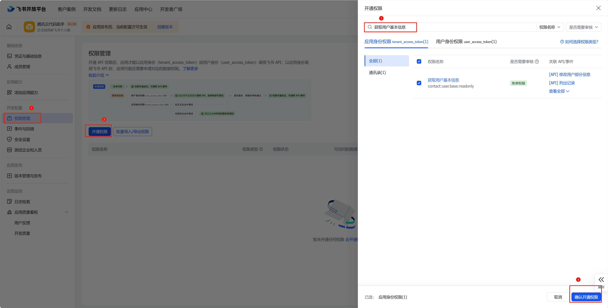
步骤三：配置自建应用可用范围
飞书企业自建应用存在可用范围限制，仅有可用范围内的成员，可通过应用完成单点登录（SSO），配置方式如下：
在飞书开放平台中，选择版本管理与发布菜单，单击创建版本。
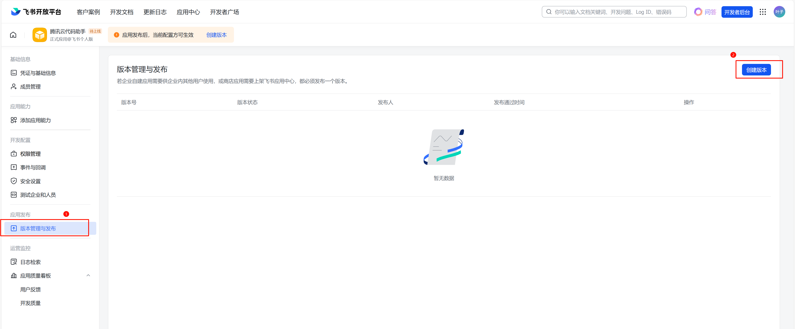
在版本详情中，编辑可用范围字段。
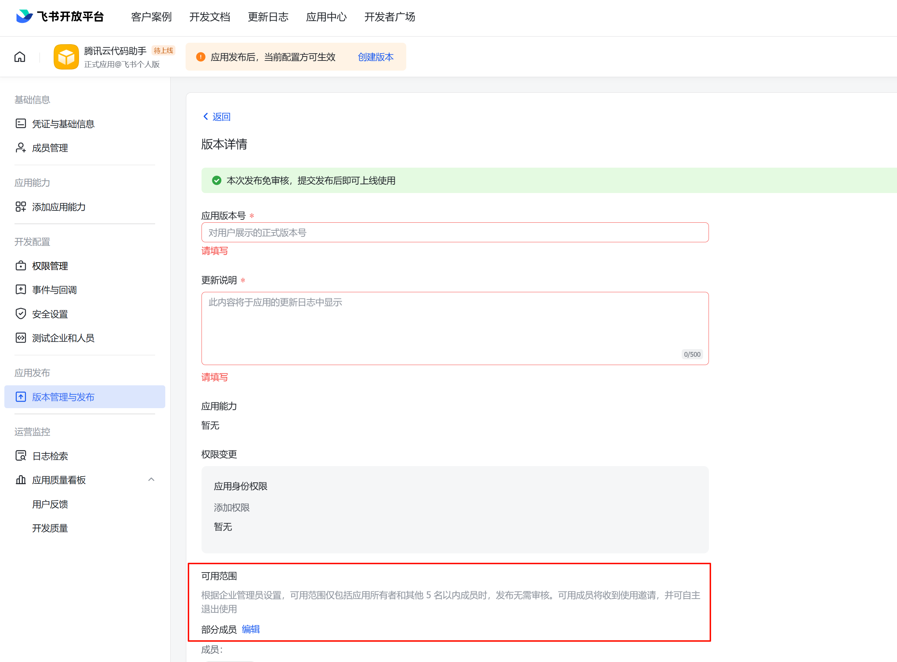
若希望飞书企业中所有成员均可使用腾讯云代码助手，则选择全部成员即可，若仅允许部分成员使用，则可选择部分成员，并添加对应的部门或成员。
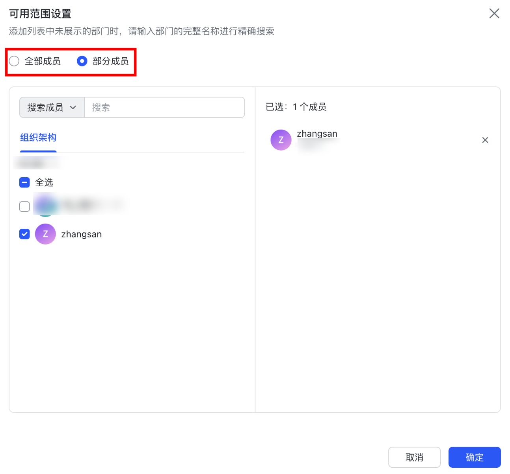
步骤四：配置认证源信息
注意：
认证源集成需选择企业专属认证账号，当前仅新建企业支持该类账号模式，选择后无法更改，请谨慎操作。

进入 腾讯云代码助手管理端，选择企业设置 > 登录认证，单击添加认证源。
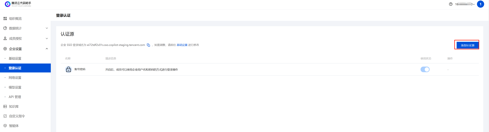
选择飞书并添加。
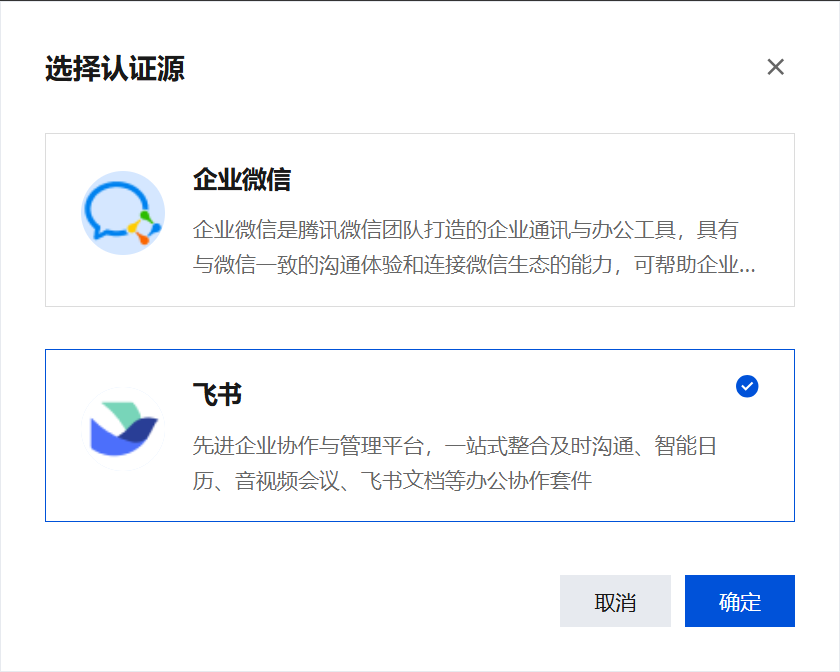
进入认证源配置流程，将飞书自建应用的 App ID 和 App Secret 填入输入框，并复制回调地址，填写至飞书自建应用的“安全设置-重定向 URL”处。
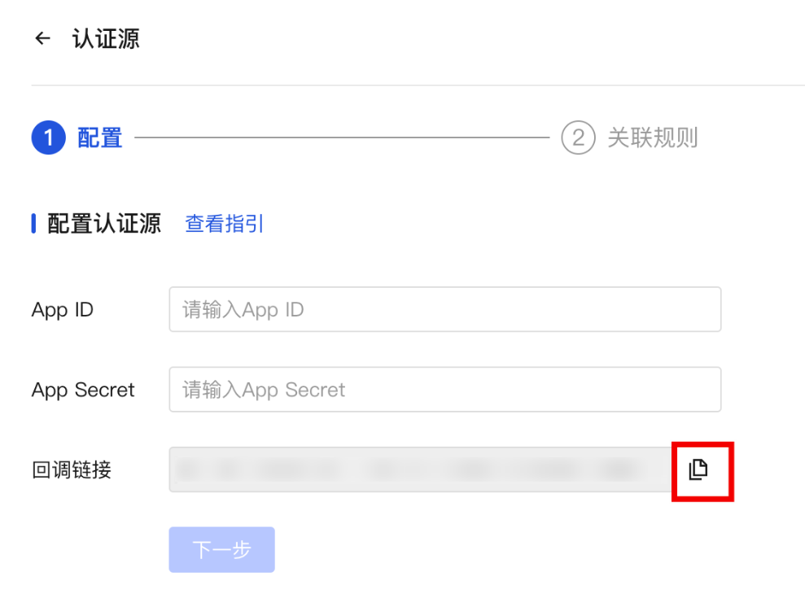
飞书自建应用 App ID、App Secret 获取位置如图：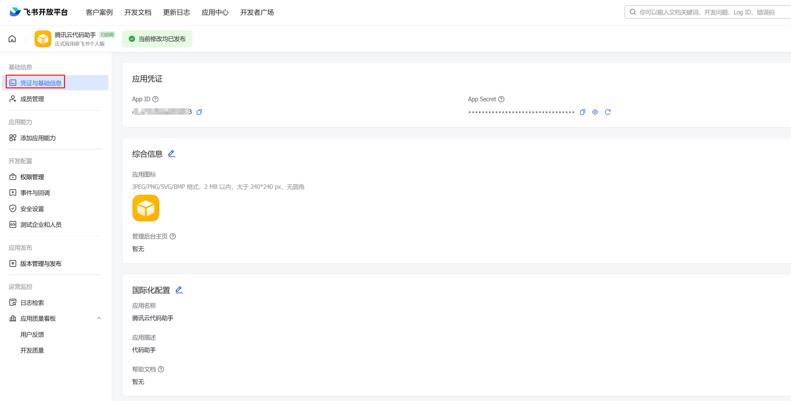
飞书自建应用重定向 URL 填写位置如图：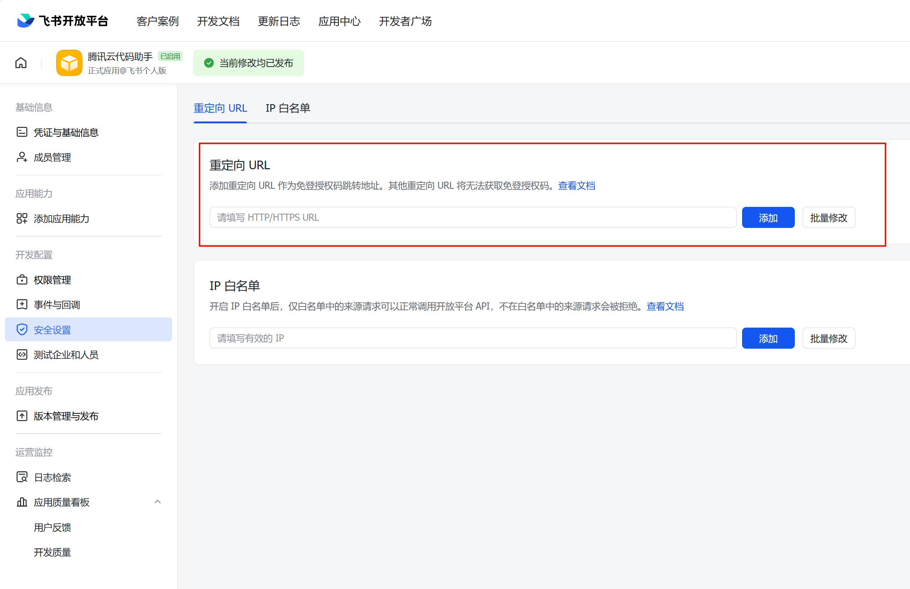
配置完成后，单击下一步，进行关联规则配置，暂不支持配置字段匹配逻辑，可配置以下内容：
说明：
- 每次登录成功时，更新用户信息：建议开启，每次用户登录时，系统将自动从认证源获取用户信息更新到代码助手当中。
- 未匹配成功时，则执行以下逻辑：建议开启“新建用户”，若拒绝登录，则首次通过飞书尝试单点登录代码助手的用户将无法成功登录。

- 完成配置后，单击保存即可。
步骤五：启用认证源登录
进入企业管理后台的成员授权-成员与部门版块，点击前往 腾讯统一身份/通讯录跳转至「腾讯统一身份」平台：

在侧边栏打开登录-认证源，在我的认证源中将飞书打开即可。若不需要其它认证源则将其关闭，仅保留飞书认证源。

用户登录
企业用户可通过 SSO 登录，选择飞书登录方式，即可登录至企业账号，详情请参见 登录及更新。